1. はじめに
先月、30DayMapChallengeをほぼRで完走しました。30DayMapChallengeとは、11月の一か月間に毎日決められたテーマに沿って地図を作成するソーシャルイベントです。この記事では、私の挑戦を振り返ります。また、これにあわせて地図作成に利用できるRパッケージやデータを紹介します。
研究で普段から地図づくりはしていますが、研究対象である交通事故以外のデータを使って地図を作ることはないため、新鮮でした。ここで新しく知ったRパッケージやデータも多かったです。
この記事は私の活動に興味のあるひとに加え、
- Rを普段触っており、興味はあるが地図を作成したことはないひと
- QGISやGeoPandasなど、R以外のツールで地図を作成しているひと
- 来年以降の30DayMapChallengeをやってみようかなと思っているひと
の参考にもなるかと思います。
2. 私の30DayMapChallenge
30DayMapChallengeは毎年11月におこなわれている地図を作成するソーシャルイベントです。参加者は毎日あらかじめ決められたテーマにしたがい地図を作ります。作成した地図は#30DayMapChallengeというハッシュタグとともにSNSに投稿します。このような1か月間のチャレンジはほかにもあり、毎日決められたテーマの絵を描くInktober Challengeや30DayChartChallengeが知られています。

私が今年30DayMapChallengeに挑戦した理由は、いま思うとはっきりしていません。なんとなくはじめたという感じです。30DayMapChallengeについては、過去にXでみたことがあり、知ってはいました。ただ、クォリティの高い地図が投稿されており、「時間がかかりそう」「むずかしそう」という印象をもっていたため、これまで挑戦はしていませんでした。
今年は昨年に続いて、地図系のコミュニティイベントであるFOSS4G TOKAI 2024に参加しました。そこで30DayMapChallengeに挑戦したひとの話を聞いた印象が残っていたというのもあると思います。11月1日になって、Xで流れてくる地図をみて、金曜日で時間があったこともあり、ふと気が付いたら、スタートを切っていたという状態でした。1日チャレンジしたら、あとは途中で終わらせたくないので、空いた時間にコツコツ地図をつくりました。
実際に挑戦してみた感想としては、時間はかかりますが、その分の価値があると思います。地図づくりをはじめると、こだわりが出てきてしまい、やりこみのなかで時間が溶けました。とはいえ、冒頭にも述べたように新しいツールや表現方法を学べたりして、おもしろかったです。それから、地図を眺める時間が増えるため、少しだけ地理に詳しくなったりもしました。時間は結構必要ですが、挑戦する価値は非常に高いので、迷っているひとはぜひ挑戦してみてほしいと思います。
3. 地図づくりの流れ
地図づくりは以下のような流れで進めました。最終的に作成した地図とコードはGitHubの「NONONOexe/30DayMapChallenge」で公開しています。
- テーマに沿う地図をイメージ
- イメージした地図を表現するためのデータを調査
- 地図を作成（コーディング）
- 作成した地図を調整
- 地図を投稿
- コードを整理してGitHubへコミット
30のテーマは表現方法であるものが多いため、まずテーマとなっているもので表現できるものを考えました。アイデアが浮かばないときは、ほかのひとが投稿している地図をみたり、利用できるデータから逆に考えたりしました。
地図に利用できるデータは30DayMapChallengeのサイトの「Mapping resouces」から探せます。しかしながら、地理空間データは収集のコストもあるからか、それほど多くはありません。いろいろな国や組織から提供されてはいますが、多くのものは行政区域（州、県など）と紐づけられていることが多いです。
コーディングはRStudioでおこなっています。また最近では、チャットボットも利用しています。私は主に次のツールを使っています：
- @shohei05さんが公開しているGPTsの「Rはいいぞ」
- Googleの「Google AI Studio」
「Rはいいぞ」はRに特化したGPTsで送信した内容をRの内容として回答してくれます。「Google AI Studio」はGeminiをはじめさまざまなモデルが使えます。トークンに限りがあるのですが、その量が非常に多く、いまのところ私は使い切ったことがありません。チャットボットはそれぞれで回答内容が違うので、それぞれのいいところを活かして実装方法の模索やコードの整理などに利用しています。
4. Rによる地図作成
地図を作るRスクリプト
Rスクリプトでは、次の流れにしたがい地図を作ります。
- ライブラリの読み込み
- データのダウンロード（手動でダウンロードする場合はなし）
- データの読み込み
- 可視化のための前処理（抽出、結合、空間処理など）
- 可視化（地図の描画）
Rは使ったことがあるけれど、地図を作成したことのないというひともいると思います。地図づくりは基本的にggplot2でグラフを作成するのと同じで、地理空間情報（イベントの発生位置、建物の大きさなど）がそこに加わるだけです。実際のRスクリプトをみると、よくわかるかと思います。
次のRスクリプトはDay 1の実際のコードです。上述した手順に対応していることがわかると思います。この流れは条件によっては不要な手順もありますが、基本的にどの地図作成においても変わりません。
# ライブラリの読み込み
library(osmdata)
library(sf)
library(tmap)
# データのダウンロードや読み込み
temples_data <- opq(bbox = "Aichi-ken") |>
add_osm_feature(key = "building", value = "temple") |>
osmdata_sf()
shrines_data <- opq(bbox = "Aichi-ken") |>
add_osm_feature(key = "building", value = "shrine") |>
osmdata_sf()
# 可視化のための前処理
temples_centroid <- st_centroid(temples_data$osm_polygons$geometry)
shrines_centroid <- st_centroid(shrines_data$osm_polygons$geometry)
# データの可視化（地図の描画）
tmap_mode("view")
tm_shape(temples_point) +
tm_dots(col = "#5BAD92", shape = 22, size = 0.05, border.col = "transparent") +
tm_shape(shrine_point) +
tm_dots(col = "#F26522", shape = 23, size = 0.05, border.col = "transparent")使用したデータソース
30の地図を作るときにテーマが異なることもありますが、同じデータから地図を作るのは退屈ですから、以下に示すさまざまなデータを使用しました。
データソース
- OpenStreetMap
- 誰でも自由に利用、編集できるオープンな地図データです。Overpass APIというAPIを介して、クエリを送ることで、データを得られます。Rでは、osmdataというパッケージから利用できます。
- HydroSHEDS
- 水域生態学研究を支援するプロジェクトです。世界中の河川のデータを提供しています。
- US Census Bureau’s data
- アメリカ合衆国国勢調査局です。アメリカにおける国勢調査のデータを提供しています。Rでは、tidycensusというパッケージで利用することができます。
- Natural Earth
- 世界地図をベクターデータとラスターデータで提供するサイトです。Rでは、rnaturalearthというパッケージを使うことで簡単に利用できます。tmapというパッケージに含まれる世界地図もこのNatural Earthをもとにしています。
- EU統計局
- EU地域の統計データです。EU統計局では、地域統計分類単位（NUTS）という単位で分けられたEUの地域に対してのデータが得られます。NUTSは0から3までのレベルがあり、レベル0だと国単位で、数字が上がるにつれて、地域が細かくなります。NUTS 3では、15万–80万人規模の地域に分けられています。Rでは、eurostatというパッケージから利用することができます。
- GBIF
- 生物多様性情報を利用できるプラットフォームです。さまざまな生物について観測されたポイントのデータが得られます。事前に登録が必要ですが、Rでは、rgbifという公式のAPIが利用できます。利用例については、伊東宏樹さんの「Rで生物多様性を取得する」が参考になります。
- Humanitarian Data Exchange（HDX）
- OCHA（国連人道問題調整事務所）が管理するオープンデータの共有プラットフォームです。地震などによる被災、難民、食料問題などに関するデータが得られます。
- Overture Maps Foundation
- オープンデータの地図データを作成するための財団です。Overtureのデータは2024年4月に公開されたばかりで新しく、MicrosoftやAmazonなどが協力しており、今後が期待されています。Rから直接データを取得する方法は現在ありませんが、duckdbを介してデータを高速に得ることができます。
データ
- 林野庁森林率データ
- 林野庁の森林率データです。林野庁は農林水産省の外局の一つです。
- VIIRS夜間光データ
- 衛星からVIIRS（Visible Infrared Imaging Radiometer Suite）という装置により取得した、夜間光のデータです。
- TLC Trip Record Data
- TLCが公開するニューヨークのタクシーの乗降位置のデータです。2022年からはParquetの形式で提供されており、扱いやすくなっています。
- Unsplash
- 世界中の写真を使えるフリー画像のサイトです。地理空間データではありませんが、撮影された場所と紐づけて扱うことはできます。
- 水深測量データ（NOAA）
- NOAA（アメリカ海洋大気庁）が公開する水深測量データです。世界中の海の深さを数値として得られます。
- 行政区域データ（国土数値情報）
- 市区町村の境界を表すデータです。日本の地域で空間集計する場合によく利用します。Rでは、瓜生真也さんが提供しているjpndistrictから利用できます。
- 国勢調査（統計局）
- e-Statから公開されている日本の国勢調査のデータです。Rでは、山口侑平さんが開発しているsimplecensusから利用できます。
- 気象データ（気象庁）
- 気象庁がWebで公開している気象データです。降水量、気温などが含まれます。Rでは、jmastatsから利用できます。
- アメリカ合衆国各州のヘックスマップ
- CartoDBに登録されているアメリカ合衆国各州のヘックスマップです。
- 地球地図データ（国土地理院）
-
国土地理院が公開している地球全体の標高や土地被覆のデータです。tmapが持つデータの一つである
landはこれを利用しています。 - Mapzen Terrain Tile
- AWSで配信されている地表の高さを表現するオープンデータです。elevatrというパッケージから利用することができます。
- 交通事故統計情報（警察庁）
- 警察庁の公開している交通事故のデータです。私の開発しているjpaccidentsから利用できます。
使用したRパッケージ
使用したRパッケージの一部を紹介します。RにはTidyverseというデータサイエンスのためのパッケージ群があります。これだけでもかなりさまざまなことができます。今回の地図づくりでは、Tidyverseに加えて、データを提供するパッケージや、地図づくりやWeb GISの機能を提供する以下の表に示すパッケージを使用しました。
| 目的 | パッケージ |
|---|---|
| データソースへのアクセス | elevatr／eurostat／jpndistrict／jmastats／jpaccidents／jpndistrict／marmap／osmdata／rgbif／rnaturalearth／simplecensus／tidycensus |
| データの加工 | arrow／dplyr／forcats／jsonlite／lubridate／purrr／stringr／tidyr |
| 空間計算 | gstat／pavement／raster／sf／spatstat／stars |
| 可視化 | geomtextpath／ggplot2／ggspatial／magick／mapgl／patchwork／rayshader／scales／showtext／sysfonts／tmap／units／viridisLite |
それぞれのパッケージはそれぞれのパッケージのドキュメントをみてもらうのがよいと思いますから、ここでは、使用頻度の高いパッケージやここで新しく利用したパッケージを少しだけ紹介します。
- sf
-
Rでベクタ形式の地理空間データに関する機能（Simple Feature Access）を扱うためのパッケージです。PostGISなどと同じように
st_からはじまるジオメトリ操作のためのさまざまな関数を提供します。また、sfというジオメトリを表現するデータ形式も提供しています。空間分析では欠かせないパッケージの一つです。 - ggplot2
-
グラフを作成するためのパッケージです。Tidyverseに含まれており、Rを使ったことのあるひとなら、使ったことがあるのではないかと思います。地理空間データについても後述する
sfという形式のデータであれば、geom_sf()という関数でプロットできます。 - geomtextpath
- ggplot2の拡張機能として、線形に沿って文字列を描く機能を提供するパッケージです。地図の川や通りなどにその線形に沿って、その名称が描かれているのを再現することができます。
- tmap
-
主題図を作成するためのパッケージです。sfやstarsのデータから地図を作成することができます。leafletでインタラクティブな地図を表示する
"view"モードとggplot2でプロットとして地図を描画する"plot"モードがあるのも、とても便利でよく利用しています。 - mapgl
- MapLibre GL JSやMapbox GL JSといった高度なWebGISのアプリケーションを作成できるパッケージです。データソースとしてsf形式のデータを渡すことができます。mapglは2024年にリリースされたばかりのパッケージですが、tidycensusの開発者でもあるKyle Walkerさんが開発しており、今後がたのしみなパッケージでもあります。
- rayshader
- RでOpenGLやWebGLを使うためのrglというパッケージをベースとして、3Dグラフィックを作成できるパッケージです。rayshaderを使うと、アーティスティックな表現ができるようになります。今回は試していませんが、水や雲などの表現もできるようです。
5. 作成した地図
実際に作成した30の地図は次の表のとおりです。なお、テーマの制約などから、Day 6、9、10、13、17、23はRを使っていません。以降では、それぞれの地図について説明します。
| 日 | テーマ | タイトル |
|---|---|---|
| 1 | Points | Shrines and Temples in Aichi（愛知県の神社とお寺） |
| 2 | Lines | The Nile River around Khartoum（ハルツーム周辺のナイル川） |
| 3 | Polygons | Japan’s Forest Coverage Rate（日本の森林率） |
| 4 | Hexagons | Population Density by State（アメリカ州別人口） |
| 5 | A journey | From Nagoya to Madrid (for attending a conference)（学会参加のために名古屋からマドリードへ） |
| 6 | Raster | VIIRS Nighttime Light（VIIRS夜間光データ） |
| 7 | Vintage style | Europe Antique Map（ヨーロッパの古地図） |
| 8 | Data: HDX | Turkey Earthquake（トルコ地震のマグニチュード） |
| 9 | AI only | Hokkaido…?（北海道らしきもの） |
| 10 | Pen & paper | Sevilla mi mapa tarístrico（私のセビリア観光マップ） |
| 11 | Arctic | Observed Locations of Polar Bears（ホッキョクグマ観測ポイント） |
| 12 | Time and space | Drop-off Locations of Taxis in New York on Weekend (Yellow taxis)（週末のニューヨークにおけるイエロータクシー利用者の降車位置） |
| 13 | A new tool | Mapping Japanese Landscape Photos from Unsplash Using Re:Earth（Re:EarthによるUnsplashの日本風景マッピング） |
| 14 | A world map | Earth Created from Elevation Raster Data（標高ラスタデータから作成した地球） |
| 15 | My data | Prefecture Visited and the Number of Visits（行ったことのある都道府県） |
| 16 | Choropleth | Number of People in Europe Corresponding to ISCED 8 in 2022（2022年の欧州のISCEDレベル8の人口） |
| 17 | Collaborative map | Colossal Minecraft Map（広大なマインクラフトの地図） |
| 18 | 3D | 3D Eckert World Map（エケルト地図3D） |
| 19 | Typography | Streets Around Abbey Road（アビイ・ロードのあたりの道） |
| 20 | OpenStreetMap | 3D Visualisation of Tokyo Station Area OSM Data using mapgl（mapglによる東京駅周辺の3次元的可視化） |
| 21 | Conflict | Locations of Domino’s Pizza / Pizza-la on OpenStreetMap（OSM上のドミノ・ピザとピザーラの位置） |
| 22 | 2 colours | Blue and White: The Flag and the White House（星条旗の青とホワイトハウス） |
| 23 | Memories | My Commute Route（通学路） |
| 24 | Only circular shapes | Aichi Population（愛知県の人口） |
| 25 | Heat | Max Temperature in October in Japan（日本の10月の最高気温） |
| 26 | Map projections | World Map Projections in Chronological Order（時系列でみる代表的投影法） |
| 27 | MicroMapping | Just Room Enough Island（ジャスト・ルーム・イナフ島） |
| 28 | The blue planet | Global Bathymetry（水深測量データから作成した地球） |
| 29 | Data: Overture | Buildings of Port of Hong Kong（香港港のビル群） |
| 30 | The final map | My Research Focus: A Map of Traffic Accident Risk（交通事故リスクマップ） |
Day 1. Points
私の住む愛知県の神社とお寺の位置をプロットした地図です。地図とかデザインとかさんの「岬vs.崎/埼」にインスパイアされて、2つのものを比較する地図にしようとして、作成したものです。建物の位置はOpenStreetMapに登録された情報をもとにしています。神社は鳥居の朱の色を、お寺は緑青の色を意識しています。ベースはtmapで作成してあるのですが、凡例部分だけAffinity Designerで作成しています。日をまたぎそうであったため、急いで付けました。神社とお寺は思ったより分布に違いがあり、歴史的背景をほのかに感じました。
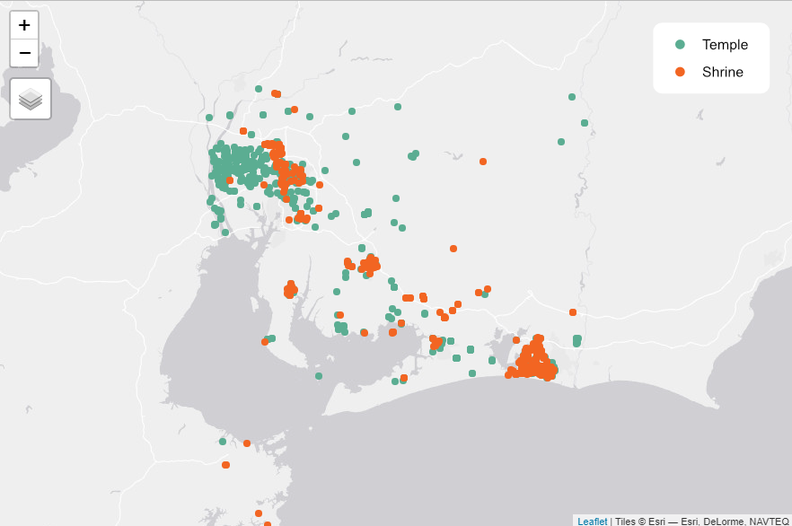
Day 2. Lines
スーダンの首都であるハルツーム周辺のナイル川を表した地図です。ナイル川には非常に大きな支流として青ナイルと白ナイルがあり、ハルツームはこの2つが合流しているところに位置している街です。地図はggplot2で作成したものになります。「Lines」と聞いて、すぐに川にしようと決めて、作成をはじめたのですが、川のデータは支流を含むと非常に大きいデータで扱うのが難しかったです。地域を限定したのもそうしたためです。
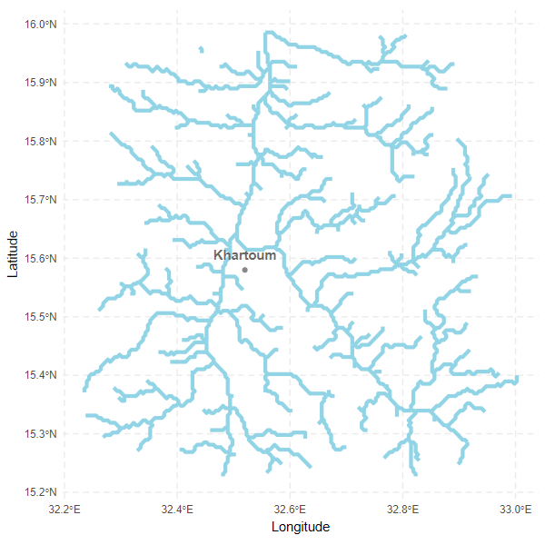
Day 3. Polygons
各都道府県の森林率を表した地図です。東北地方や日本海側に森林被覆率の高い地域が集まっており、一方で都市部は森林率が低いことがわかります。行政区域の表現にはjpndistrictを使っています。
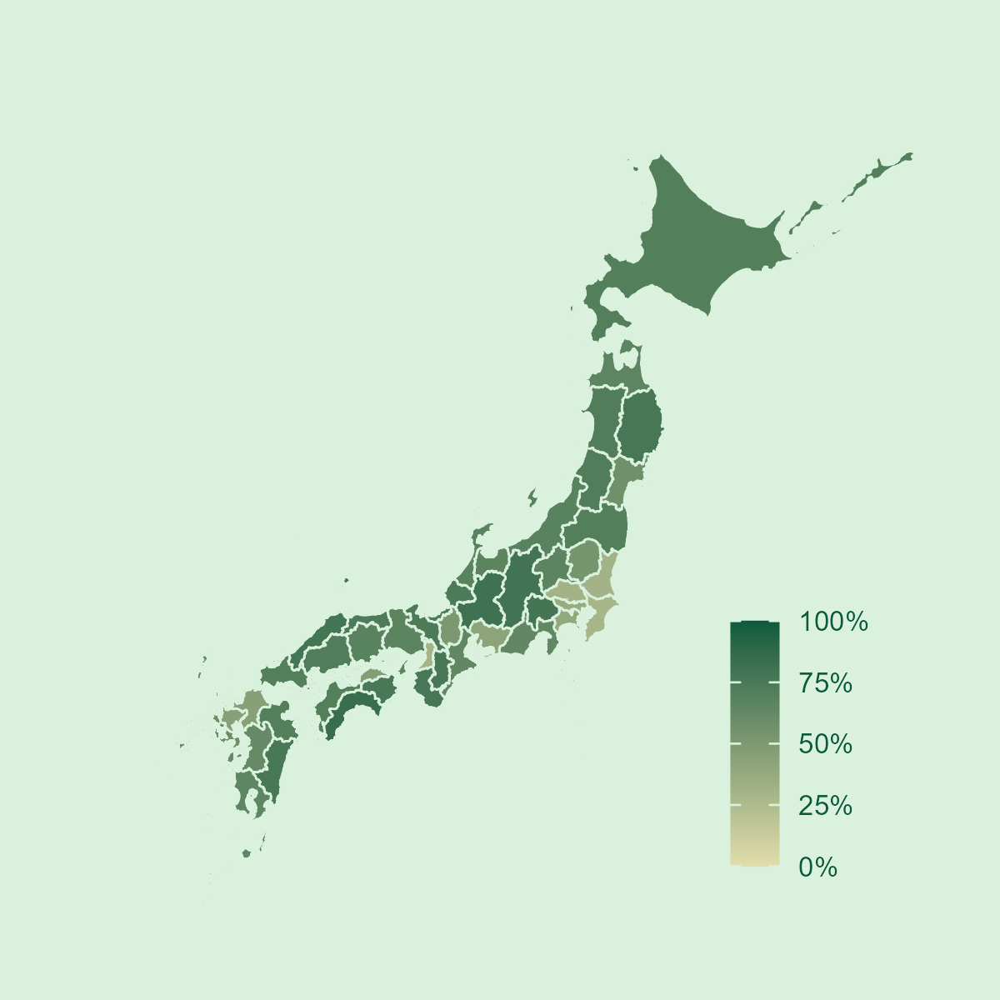
Day 4. Hexagons
アメリカ合衆国の州別人口密度を表した地図です。東海岸の方は首都ワシントンD.C.があることもあり、特に人口が集中していることが読み取れます。ヘックスマップはggplot2だと、geom_hex()を使うことで作成できますが、ここでは、公開されていたアメリカ合衆国のヘックスマップ（CartoDB）を利用しています。また、人口密度のデータはtidycensusより取得しました。州の行政区域で塗り分けると、印象がそれぞれの州の面積によるところがありますが、ヘックスマップだとそうしたバイアスがないことが利点に思います。
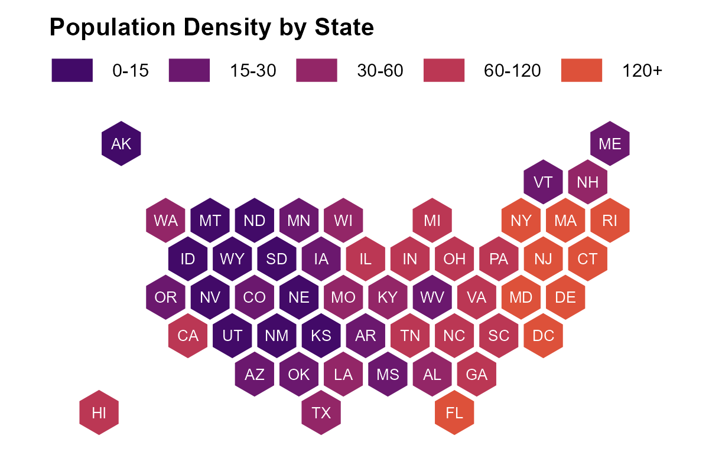
Day 5. A journey
名古屋からマドリードへ向かったときの飛行機の航路を描いた地図です。飛行機の最短経路を描くには、地図上の距離と方位が正確な正距方位図法が有名であるため、これを採用しました。平面直角座標系への変換はデータそのものを変換する場合はsfのst_transform()で、描画上のみ変換したい場合はggplot2のcoord_sf()で変換できます。ここでは、"+proj=laea +lat_0=34.86 +lon_0=136.81 +x_0=4321000 +y_0=3210000 +ellps=GRS80 +units=m +no_defs"という座標系を設定しています。lat_0とlon_0の部分が中心位置の緯度経度を示しています。なお、この地図についてですが、実際の航路はこのように直線的には飛んでいません。
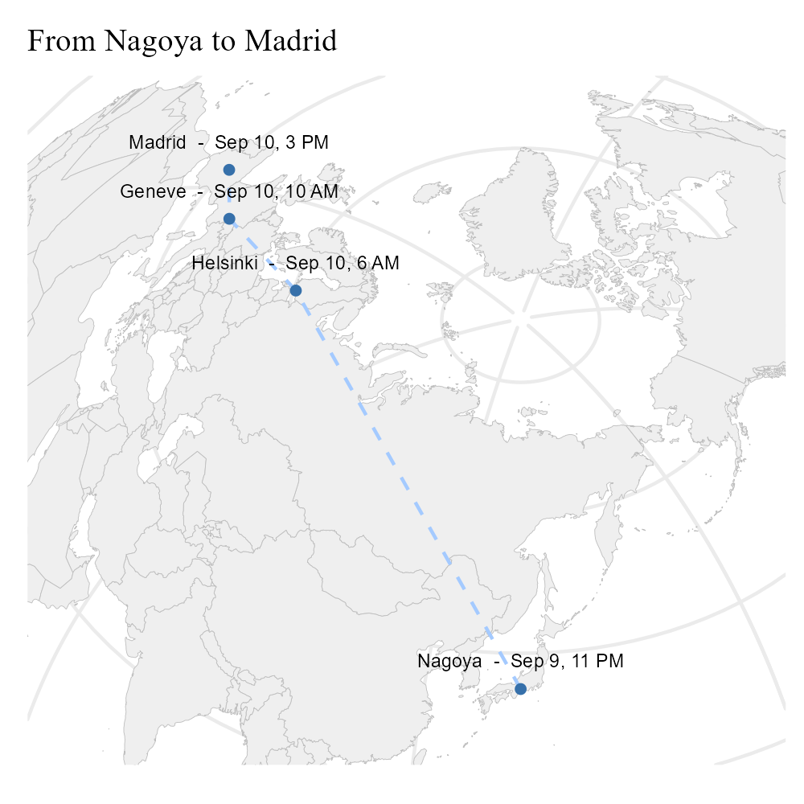
Day 6. Raster
VIIRSという装置により衛星で計測された夜間光のデータを描いた地図です。都市部の街の明かりがとても明るいことがわかります。この地図はWeb上で地図を作成できるGoogle Earth Engine（GEE）で作成しました。GEEはRからもrgeeというパッケージを用いて、利用できるはずなのですが、私は環境の問題からかなぜかうまく使うことができませんでした。
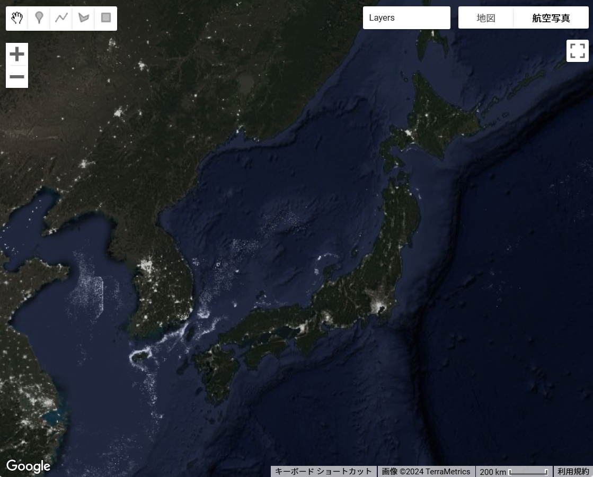
Day 7. Vintage style
ヨーロッパを古地図風に描いた地図です。描かれている地形や国は現在のもので、色とフォントを調整したものになります。私はファンタジーRPGとかが好きなため「Vintage」な地図というと中世ヨーロッパというところからこのような地図になりました。あとから振り返るとれきちずのように日本の古地図を作ってもよかったかもしれません。
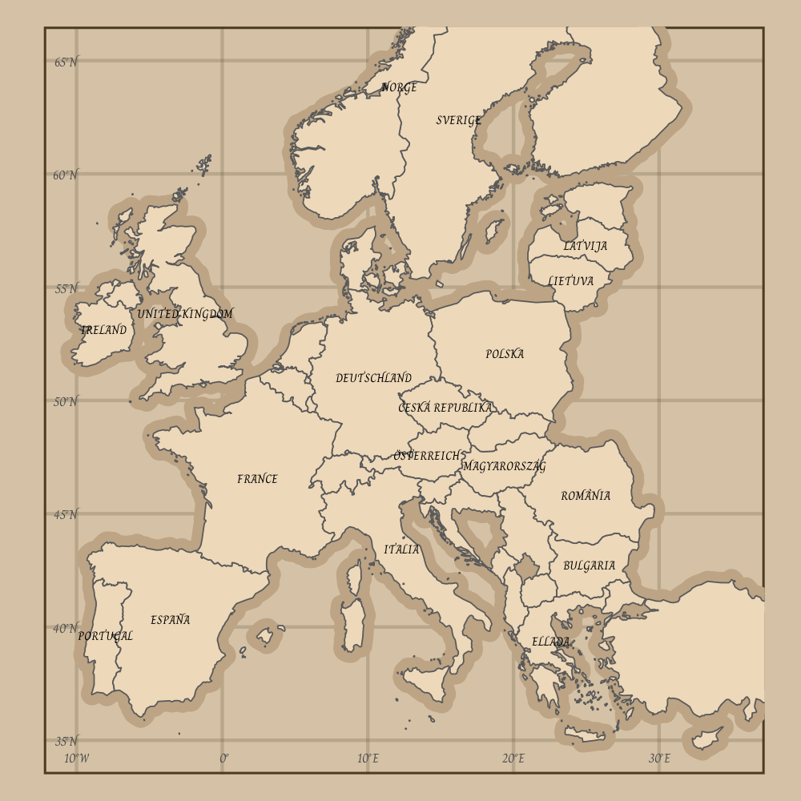
Day 8. Data: HDX
トルコ・シリア地震の観測位置とマグニチュードにもとづくバブルマップです。非常に大きな地震が集中して発生していることがわかります。また、T字状に観測位置があることから、そこに断層線があるのが伺えます。
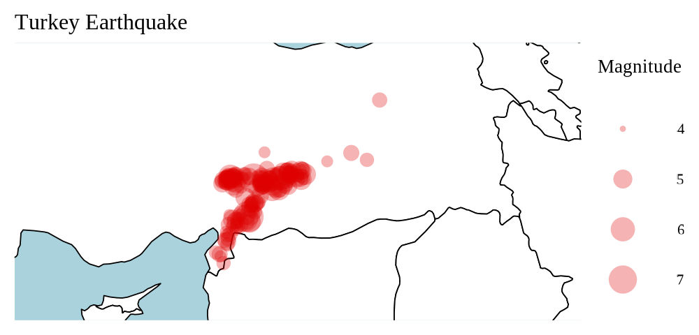
Day 9. AI only
ChatGPT（DALL-E）に描いてもらった北海道です。観光地らしいものが描かれつつ、それらしい雰囲気はありますが、まったく北海道ではありません。
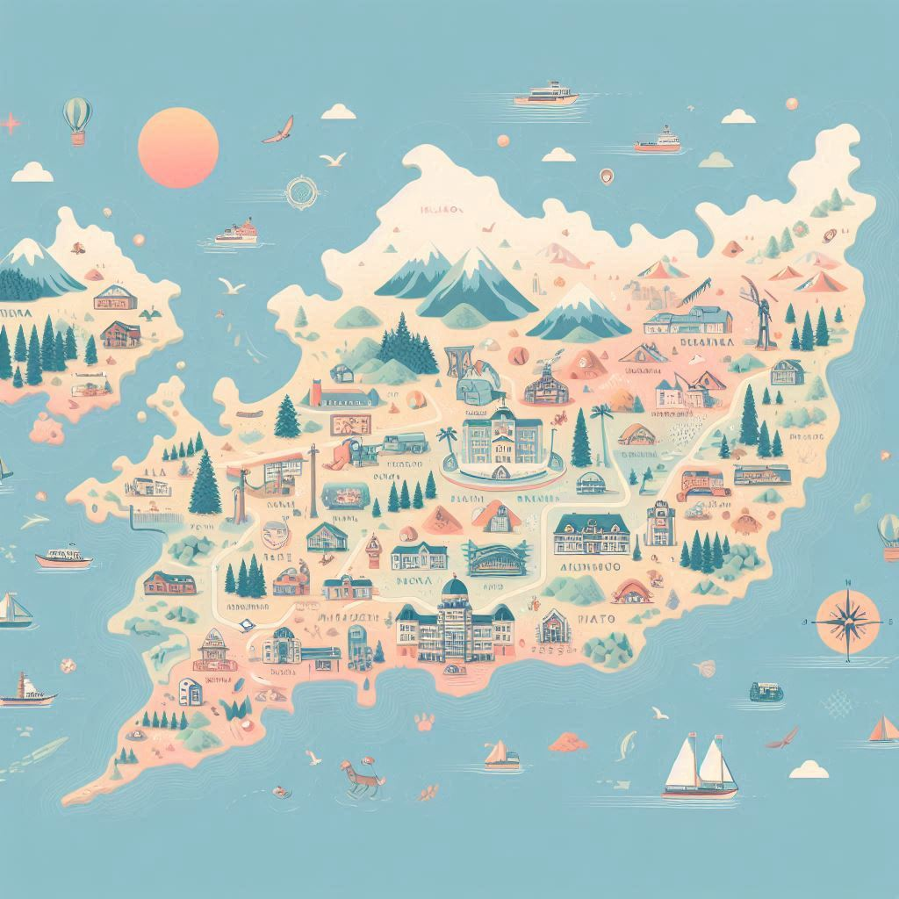
実はこの北海道らしきものはこれでもプロンプトを調整しています。その前に出力されたものはさらに北海道ではありませんでした。それが、この「HOKKAIDO JAPAN」という日本全国が北海道化するという謎の地図です。「Sappido」という札幌と北海道を足して2で割ったような地名があったり、いたるところが函館だったりしています。このカオスのあとだったので、先ほどの画像を採用しました。
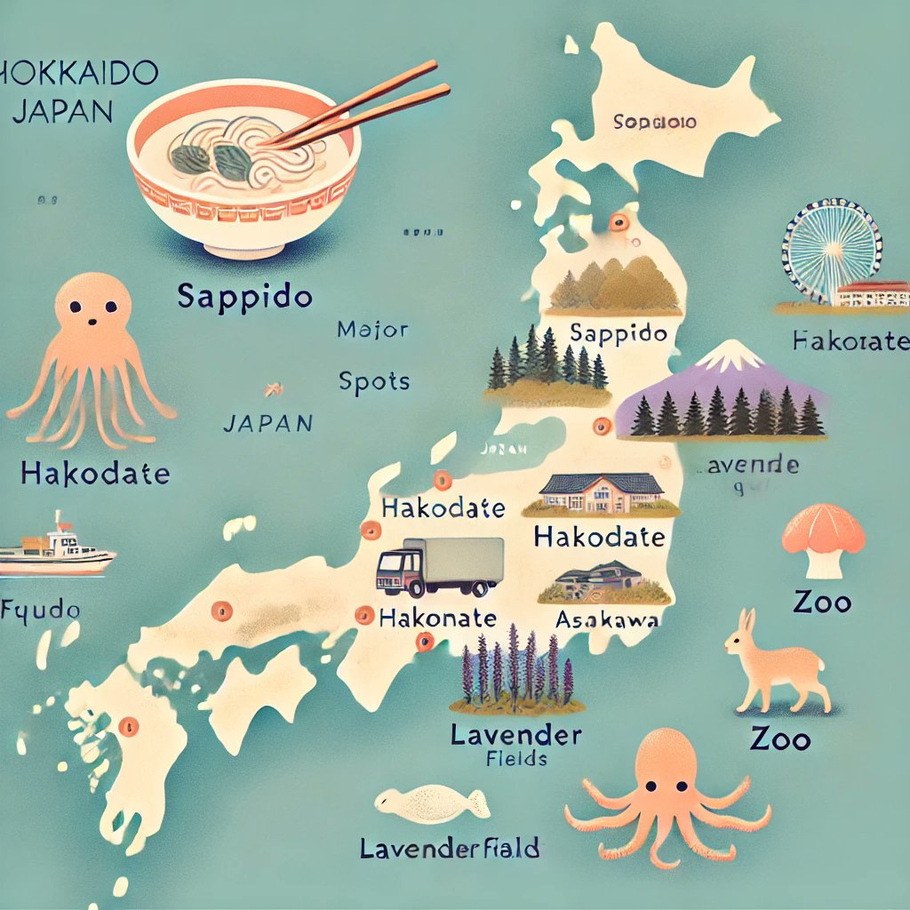
Day 10. Pen & paper
スペインのセビリアで観光したところを描いた手書きの地図です。北から、サンタ・フスタ駅、ヒラルダの塔、カテドラル、マエスランサ闘牛場、スペイン広場、メルカドーナを描いてみました。セビリアは観光地が歩ける距離に集まっていて、観光しやすいので、ぜひ機会があれば訪れてみてください。
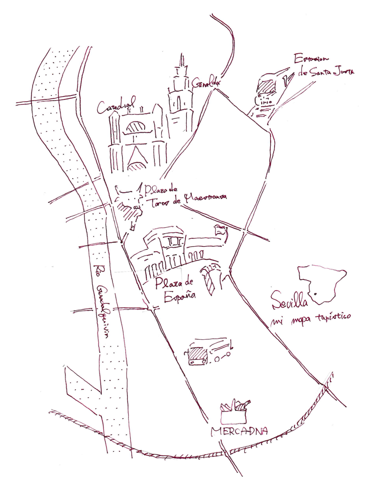
Day 11. Arctic
ホッキョクグマの観測ポイントをマッピングした北極中心の地図です。ホッキョクグマの観測ポイントはrgbifを用いて取得しています。北極の氷の部分のデータを手に入れる方法がわからなかったため、氷の部分は描画できていません。全体には、海岸沿いに広く分布していることがわかります。特にアラスカ付近には非常に多くの観測データがあります。
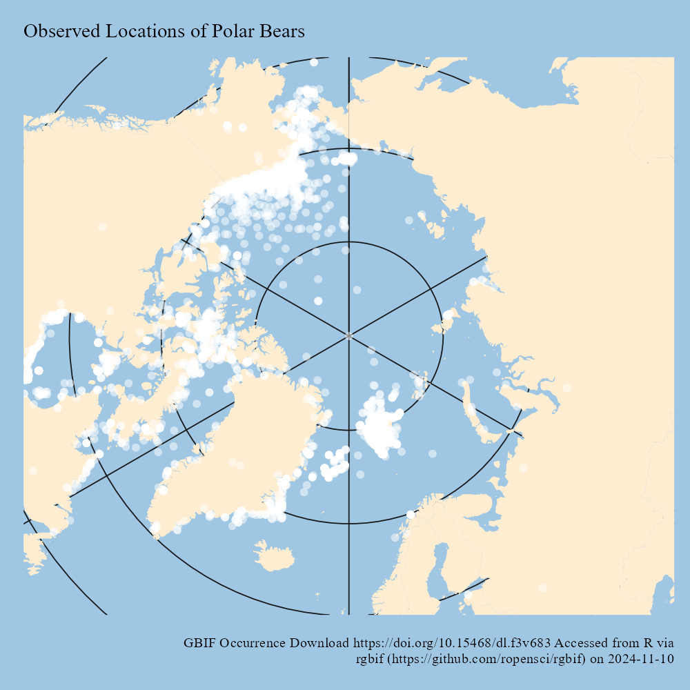
Day 12. Time and space
週末のニューヨークにおけるイエロータクシー利用者の降車位置を表した地図です。3か月のデータを使って、各月と朝昼夜の9つに分けてプロットしました。マンハッタンのある中心地（地図の西部）は常時降車数が多いようです。クイーンズ（地図の東部）の方は時間や月により変化がみられます。週末のデータを利用しているので、観光客による影響が大きいのかもしれません。
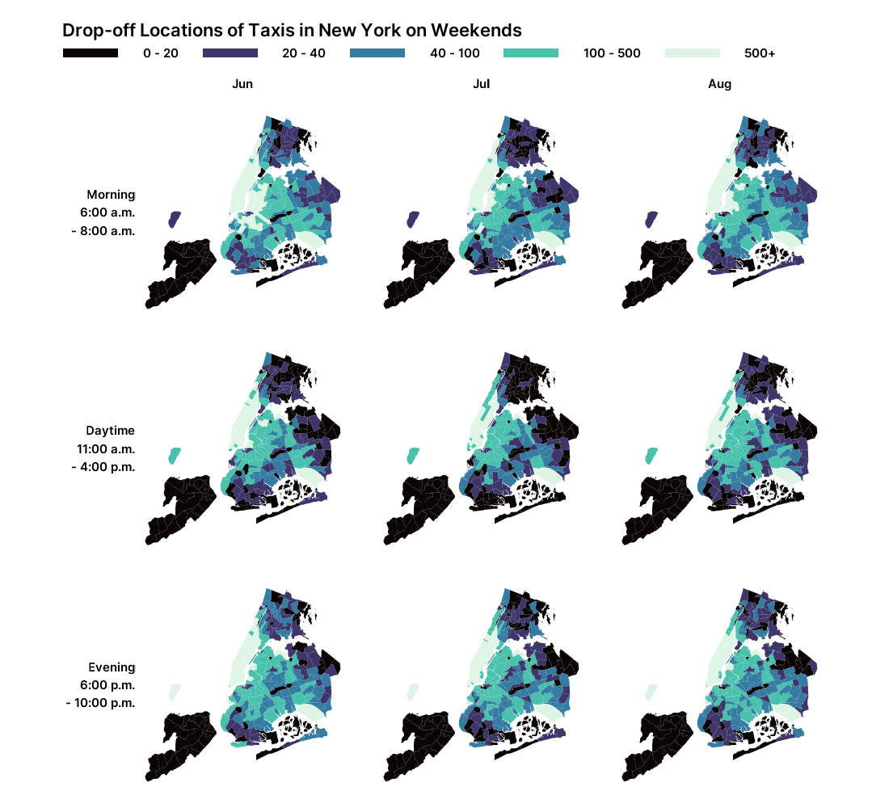
Day 13. A new tool
Unsplashにアップロードされている日本風景をRe:Earthにマッピングした地図です。このDay 13では、今まで使用したことのないツールを使って地図づくりをすることがテーマになっています。Re:EarthはEukaryaが提供するWebGISプラットフォームです。Web上でプロジェクトを作成し、地理空間データをアップロードするだけで、WebGISのアプリケーションを作成できます。FOSS4G TOKAIでお話だけ聞いて、使ったことがなかったので、使ってみましたが、非常に簡単にアプリケーションを作成できました。ここでは画像URLを位置に紐づける単純な操作しかしていませんが、Re:Earthで作られたほかのアプリケーションをみると、PLATEAUのデータを読み込めたり、人流を表現できたり、高度なこともできるようです。
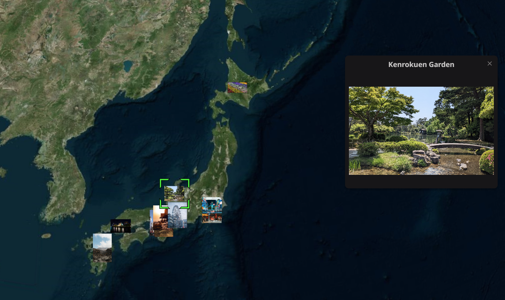
Day 14. A world map
標高と水深測量のラスタデータから地球を描いたものです。2種類のラスタデータの分解能を合わせて、合成し、正射図法で描画することで地球らしくしました。これまでラスタデータを使ったことがなかったので、学びの多い地図でした。
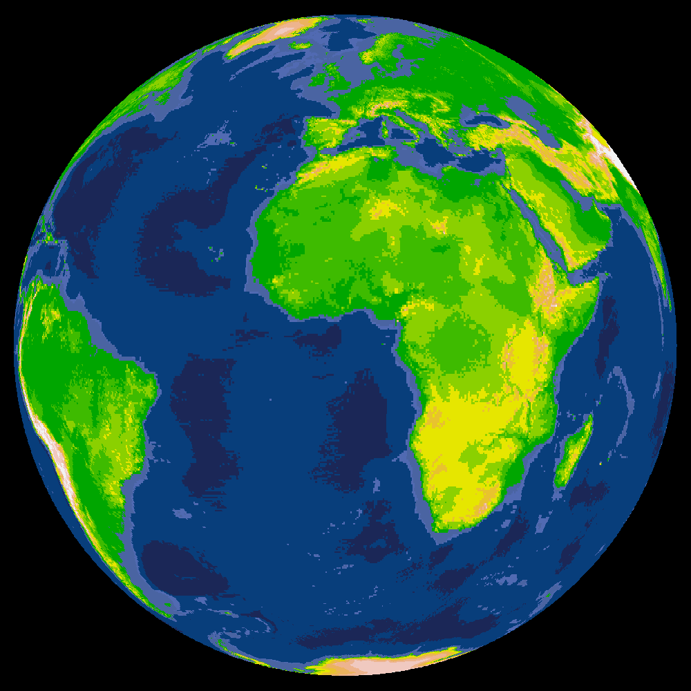
ggplot2でこの図を出力するとブラウン管を通したような見た目になります。この地図はtmapで作成していて、ggplot2でできないかを試したときに偶然気が付きました。なぜなんでしょうか。いまだによくわかっていないため、わかる人がいたらぜひ教えてほしいです。
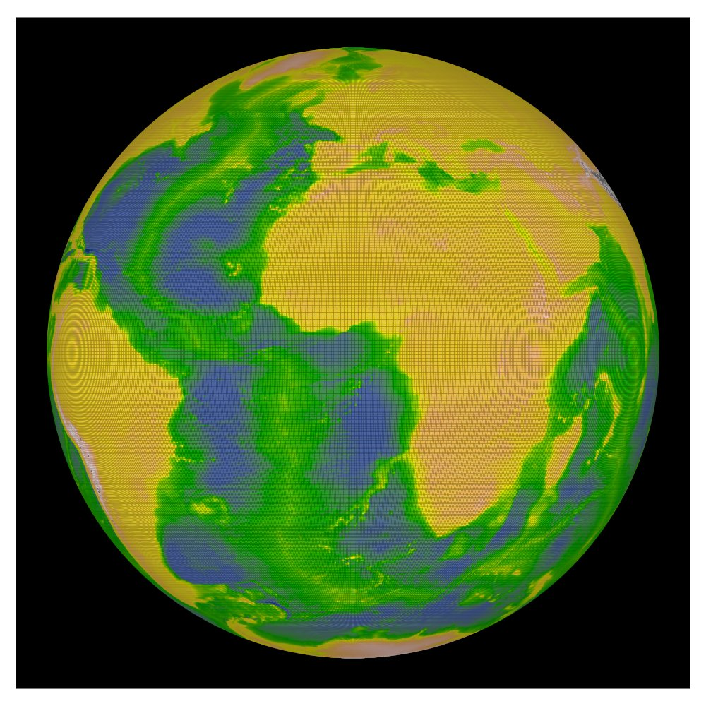
Day 15. My data
行ったことのある都道府県を、その回数で塗り分けたものです。まだまだ行ったことのないところが多いです。どうしても日本の地図を作成することが多くなってしまうため、ここでは、sfのst_simplify()を用いて、ポリゴンを単純化し、略地図風にしてみました。
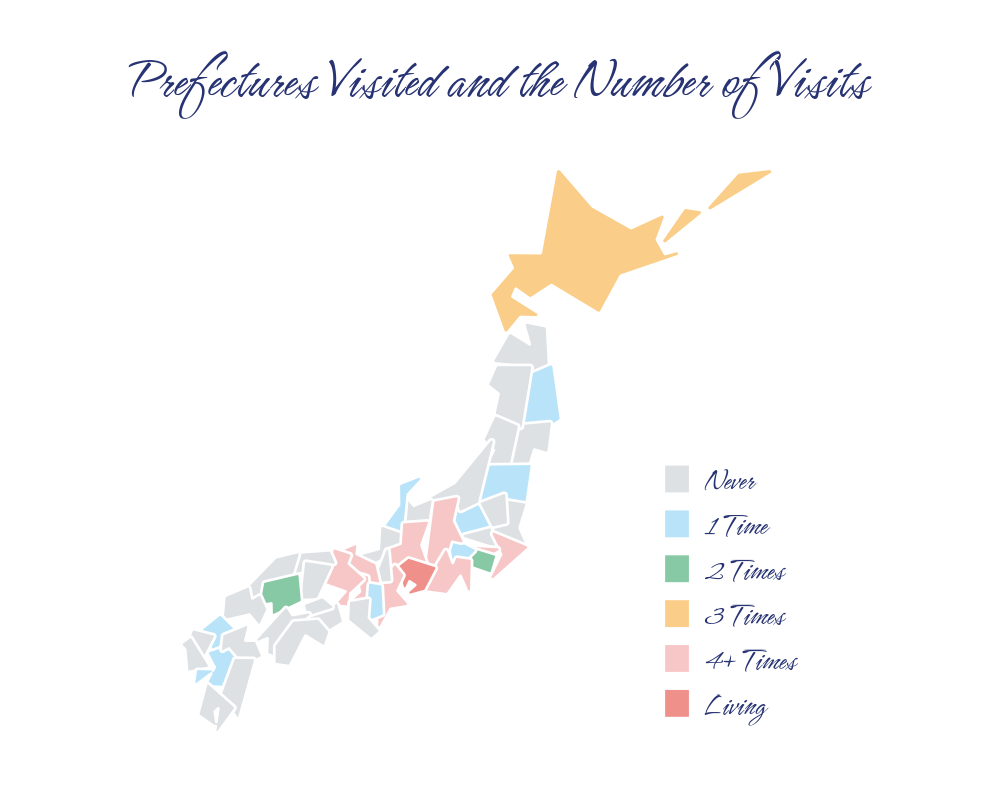
Day 16. Choropleth
2022年のEUにおけるISCEDレベル8の人口にもとづくコロプレスマップです。ISCED（国際標準教育分類）はUNESCOが策定している、教育のレベルを表す区分です。0から8までの9段階で、レベル8は博士号同等のレベルを表します。これは国ごとに塗分けているのですが、イタリアやポーランドのあたりは20万人を超えています。国の総人口や面積にもよるとは思いますが、非常に多くのひとが高い能力を持っていることが伺えます。
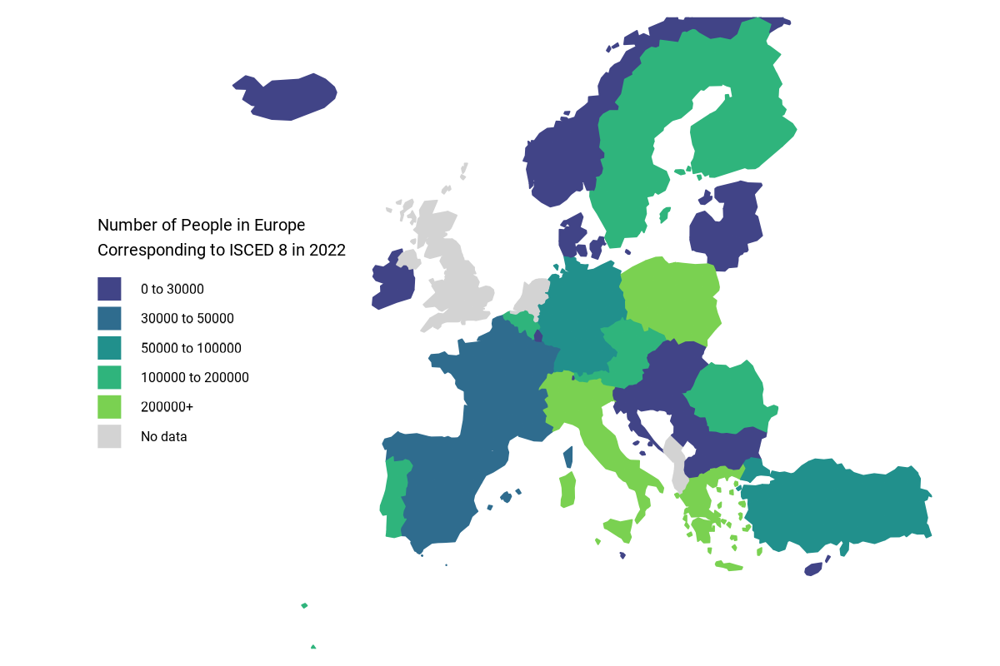
Day 17. Collaborative map
マインクラフトの大量の地図を額縁に並べたものです。Day 17はひとと協力して地図を作成するというテーマでした。地図は友人に呼び掛けて、1枚ずつ探索して埋めてもらって、300枚を超える地図を収集しました。

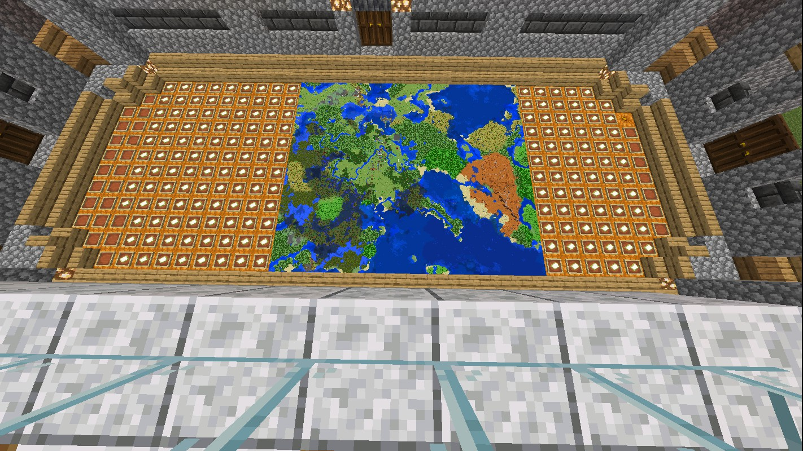
Day 18. 3D
標高の高さを3D表現した世界地図です。rayshaderを使用してggplot2で描いた地図を3D化しています。このエケルト図法で描かれた世界地図はtmapの主題図としてよくみかけるものですが、3Dになると印象がガラリと変わるように感じます。
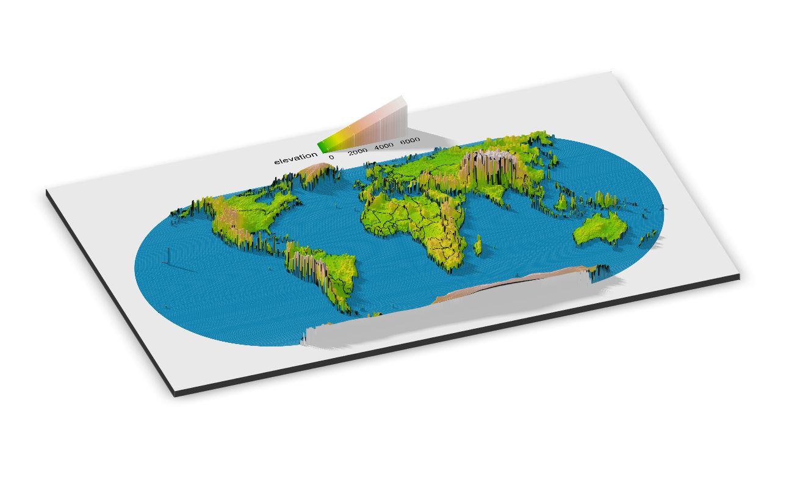
Day 19. Typography
ロンドンのアビイ・ロードの付近の通りを通りの名称で描いたものです。Day 19は「Typography」というテーマで、文字で地図を表現するということでした。通りに沿って文字を並べるところが先に決まって、それから「通り」というところからビートルズのアビイ・ロードの横断歩道が浮かんだので、このようにしました。
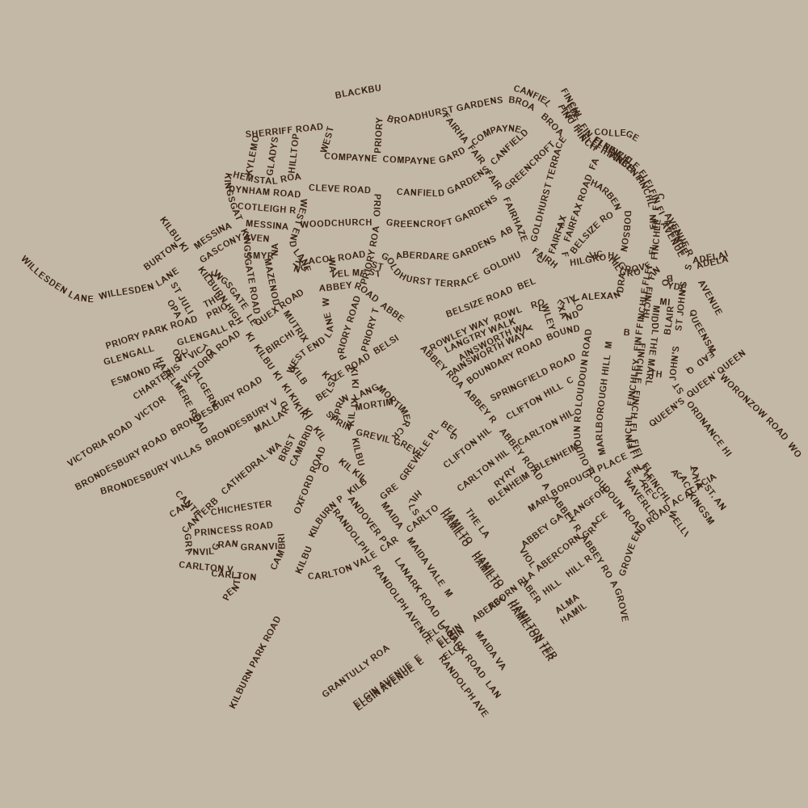
Day 20. OpenStreetMap
東京駅周辺のOpenStreetMapのデータをMapLibre GL JSで立体的に可視化したものです。ここではOpenStreetMapのデータのみを利用して、高さも表現しています。しかしながら、高さが登録されていない建物も多いので、それらは適当な高さにしてあります。
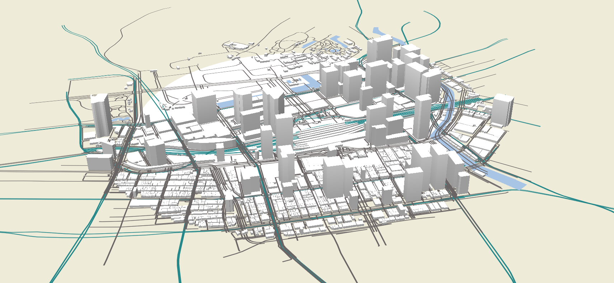
Day 21. Conflict
ドミノ・ピザとピザーラのある市区町村を描いた地図です。ドミノ・ピサとピザーラは人気ピザ・チェーンのトップ2らしいです。このデータはOpenStreetMapに登録されているものを利用しているので、すべての店舗が描かれているわけではないと思いますが、地図にしてみると、意外とばらけていることがわかりました。特定の地域に偏っているということもないようです。各店の市場戦略が表れているのでしょうか。
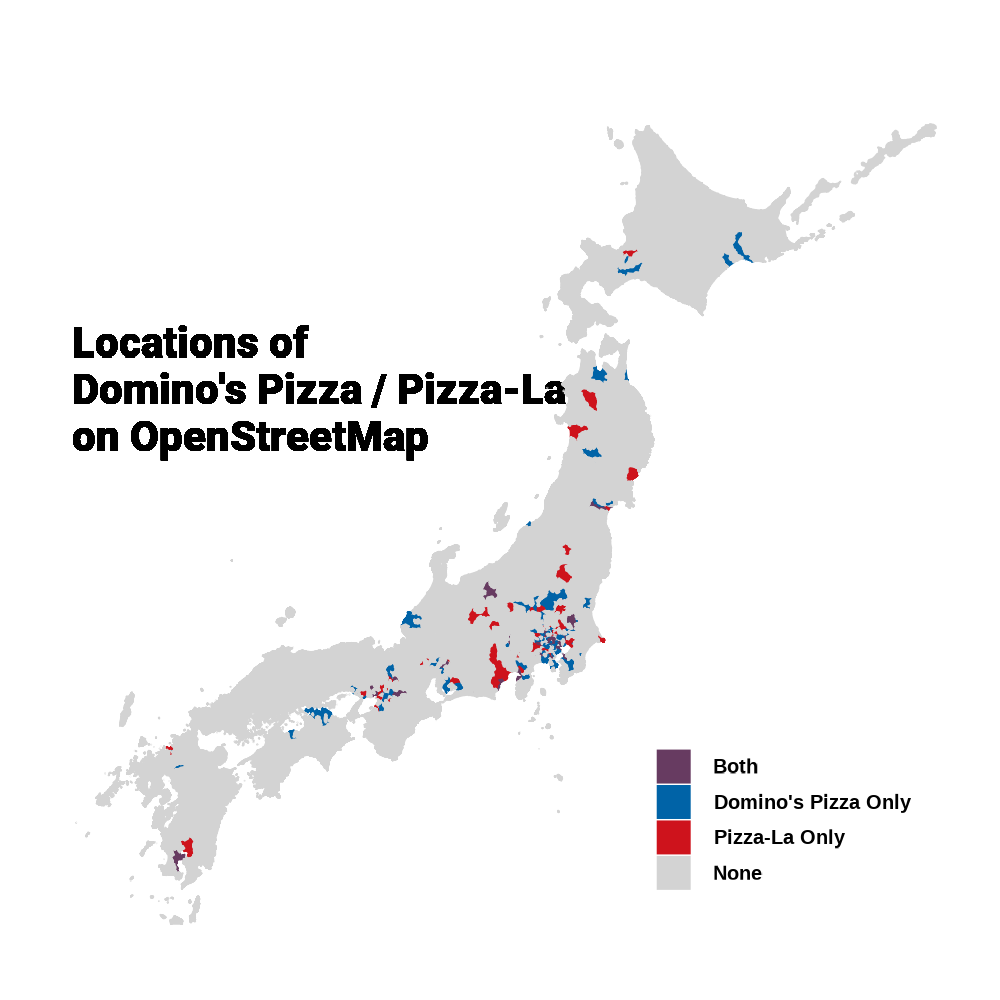
Day 22. 2 colors
星条旗の青で塗った背景に白でホワイトハウス周辺を描いた地図です。2色を使った地図がテーマであったため、名前に色を含む場所からホワイトハウスにしました。データはOpenStreetMapのものです。対称的できれいな地図になりました。

Day 23. Memories
これまでの通学路（通勤路）を表現した地図です。Google Mapをトレースする形でAffinity Designerで手でラインを引いて作成しました。この地図にあるように、私は偶然にも小学校から社会人まで、少しずつ自分の行動範囲を広げるような形で進路が決まっています。
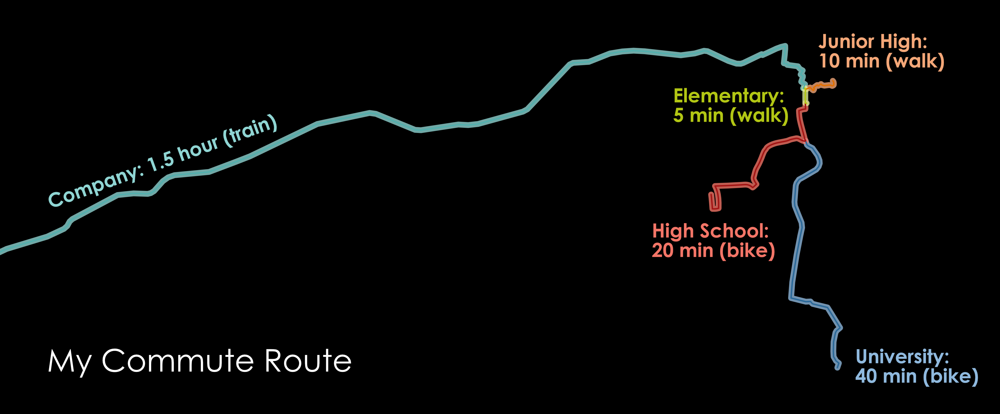
Day 24. Only circular shapes
愛知県の人口を表現したバブルマップです。simplecensusを使って国勢調査のデータをもとに描いています。地域の大きさがばらばらであるため、名古屋の方が細かくなっていますが、うっすら愛知県の形状がみえるでしょうか。あと、この地図の文字の部分は自分で描いたものですが、うっかり「Population」の「i」が抜けるというミスもしていることにあとで気づきました。
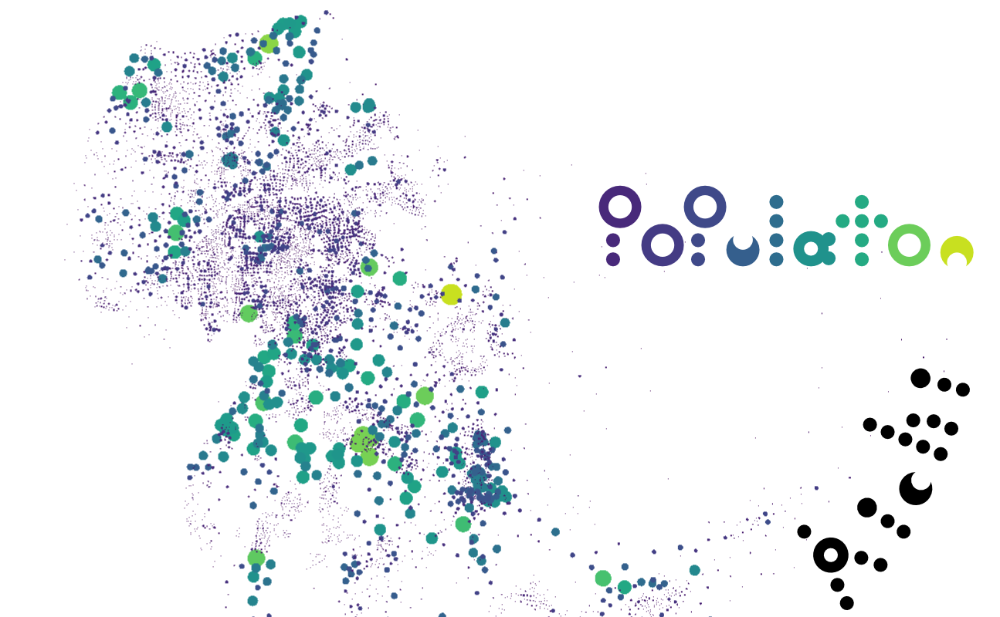
Day 25. Heat
日本の10月の最高気温を表したヒートマップです。気温は気象庁のデータをもとにしていますが、すべての地域にデータがあるわけではないため、データのない部分を逆距離加重法（IDW）により、空間補完しています。今年は11月になり、急に冷え込んだので、10月の暑さはもう思い出せません。
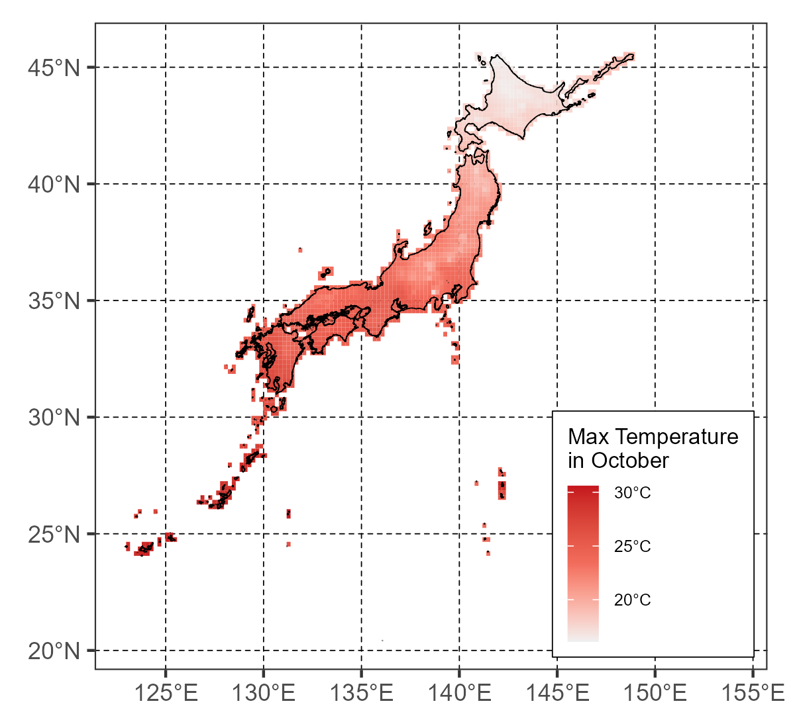
Day 26. Map projections
開発された時系列順に投影法を並べたものです。左上は変換前のWGS84（Webメルカトル）にしています。代表的なものを並べましたが、学校で習うことのないものも多いかと思います。投影法は地球を歪みなく平面上に表現するためにいまでも開発されていて、このなかでは「イコールアース図法（Equal Earth projection）」が最も新しいものになります。sfでは内部でPROJというソフトウェアを介して、座標系を変換しています。変換可能な座標系はPROJのページから確認できます。この地図にない投影法もここで確認できます。
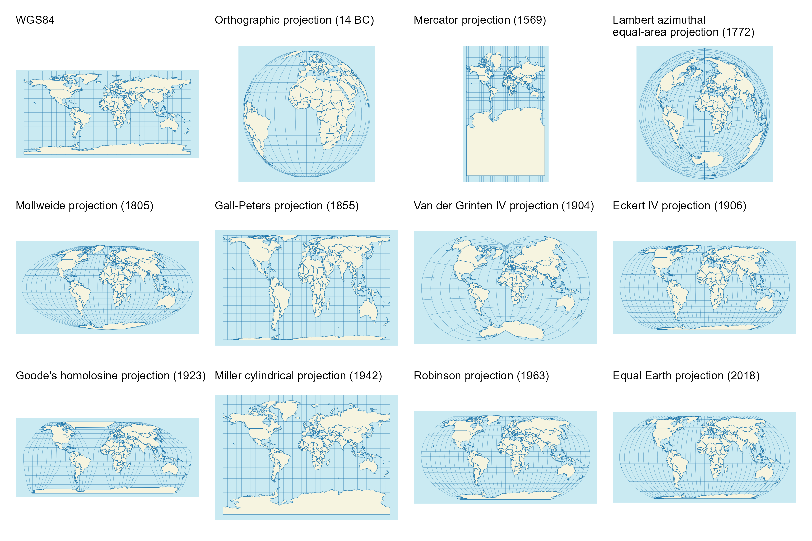
Day 27. MicroMapping
世界で最も小さな有人島であるジャスト・ルーム・イナフ島を描いた地図です。ニューヨーク州にあるとても小さな島です。あまりにも小さくて、表現できるオブジェクトがこれだけしかありませんでした。実際の写真に合わせて、家の屋根を赤くしています。となりにあるのは小さな植え込みでそのなかに1本だけ木が生えています。小さいので解像度が低いですが、海も一応深さに合わせて色を付けています。
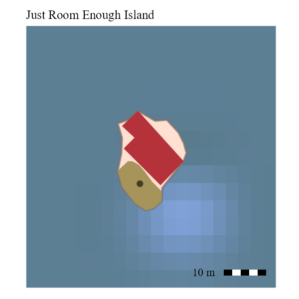
Day 28. The blue planet
水深測量データから作成した地球のGIFアニメです。Day 14で地球を描いたときに、回転させたかったのですが、はじめてラスタデータを触ったこともあり、このときは方法がわからず断念しました。それからこのDay 28で再チャレンジして、成功しました。地軸の傾きやGIFへの変換はImageMagickで実現しています。惜しむらくは自転方向を誤ってしまったことだけでしょうか。これには科学者として反省しています。

Day 29. Data: Overture
香港港のビル群を立体的に描いた地図です。Day 29はOvertureのデータを使用した地図を作成します。Overtureのデータはduckdbを経由して、利用することができるのですが、Rのduckdbパッケージはまだ地理空間データのための拡張機能に対応していないため、duckdbを使った方法は断念しました1。ここではGeoJSONを使っています。中身はOpenStreetMapのものが多いのですが、わかりやすいスキーマに設計されているので、今後duckdbを経由して、簡単に使えるようになったらうれしいです。
1 直接、duckdbを利用する場合は問題ないはずです
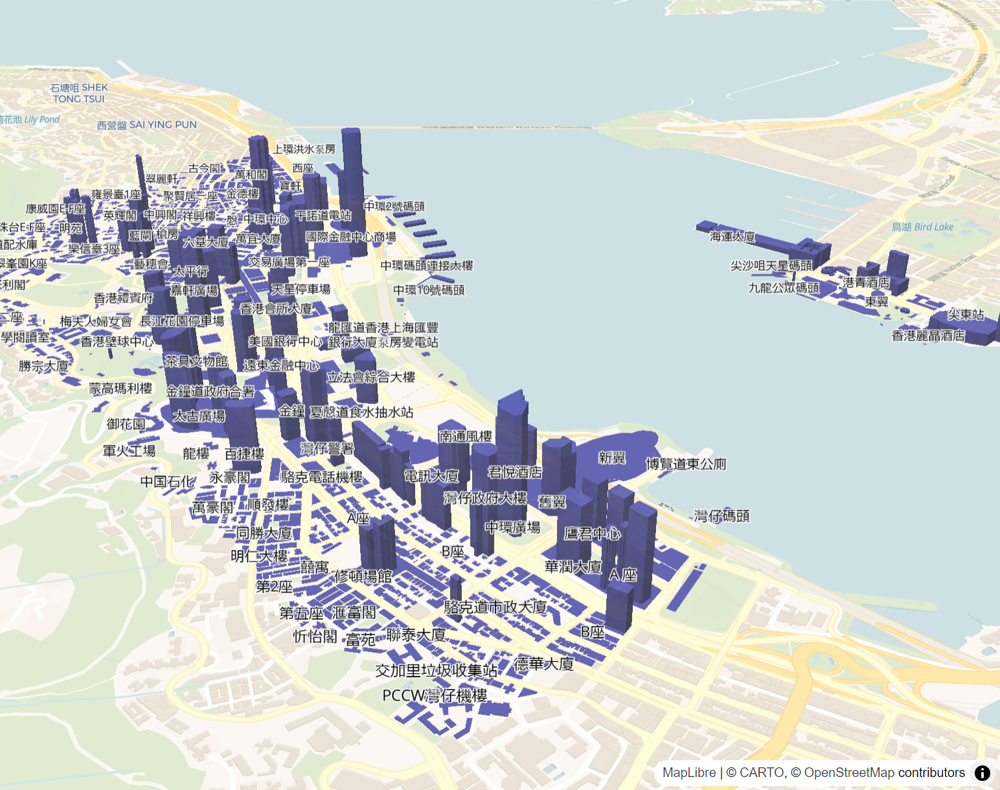
Day 30. The final map
研究で対象にしている交通事故のリスクを可視化した地図です。私の研究では、交通事故の発生リスクの推定や要因の調査などを対象にしていますが、この地図では道路の線形に合わせたヒートマップを描きました。交通事故は基本的に道路でしか発生しないため、通常のヒートマップの場合、路外の発生も評価してしまいます。これに対して、この地図のヒートマップでは道路ネットワークのなかでリスクを算出しています。私はこの地理空間的なネットワークに沿った特殊な空間事象を分析するためのパッケージとしてpavementというパッケージを開発しています。
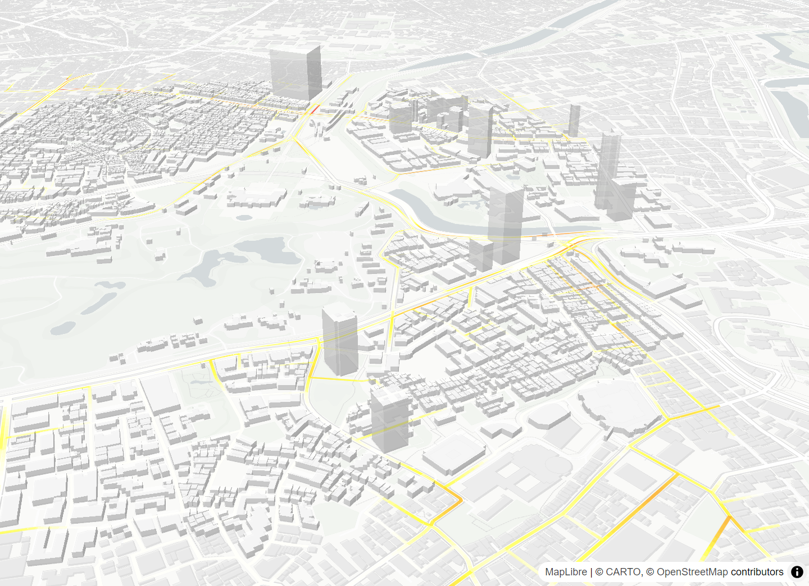
6. まとめ
この記事では、私のRによる30DayMapChallengeの振り返りました。また、そこで使用したデータやRパッケージを紹介しました。
Rでは地図をつくるためのさまざまなパッケージが開発されています。使ったことのないパッケージがあれば、ぜひ使ってみるとよいのではないでしょうか。また、この記事が今後Rで地図づくりをするひとの助けになればと思います。また、今回私の作成したRスクリプト、地図、そのほか私の活動など、コメント、質問、気になる点などいただけたらうれしく思います。